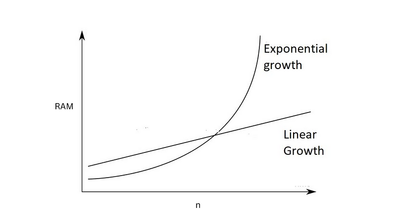
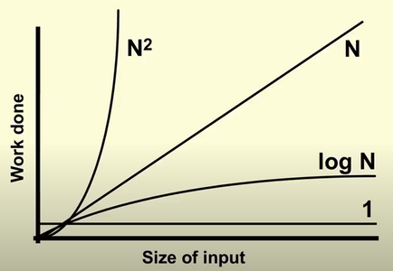

Estimating complexity is an essential part of programming.
It is how we value our code as we write it.
It is how we determine if it is good code or bad code.
The quality of our code can be separated in 4 parts...
- Code maintainability
- Code size
- Space complexity
- Time complexity
Given our solution is the same, these 4 metrics determine our code quality.
By learning the theory behind each type of complexity we are meant to improve our intuition and write better performant code.
The algorithm behind your code is valued by all 4.
Besides maintainability and code size, we can focus on how algorithms use memory. This is known as space complexity.
Space complexity is a measurement of memory in code.
This type of memory is stored while the code is running. We do not open up a Task Manager and check the RAM usage. That is not space complexity. Though, it is a surefire way to really check memory.
Instead it is an internal calculation we make as programmers while coding. An estimation as to how much memory the code will take in a particular section of the code base.
As we learn space and time complexity we are meant to learn every formula and when our code matches that case.
All these formulas will have use cases in your future programming.
They are...
- f(m)
- f(m*n)
- f(n^m)
- f(log(n)
- f(n!)
- f(m^n)
- f(n!)
What this represents is how the algorithm in your code takes up memory.
Let's take a look at some code examples:
f(m)
def fOfM():
string = "hey"
print(string)
fOfM()
Notice we just save a string and then print it.
There are no loops, just a direct piece of memory allocated and used.
Now lets look at f(n)
f(n)
def f(n):
nums = []
for i in range(n):
nums.append(i) #This is the memory taker
return sum(nums)
f(15)
Notice in this function we append a number to nums. Because of this we are taking n space. The bigger the n the bigger the memory space we take.
This is a memory complexity of f(n) because our memory scales to n.
If you looked at this python script in RAM in your task manager you should notice it takes more memory than f(1).
The bigger the f function outputs due to n the more RAM it will take. Meaning more space is more RAM.
Now lets look at f(n^m)...
f(n^m)
def populate2DArray(n, n2): #f(n^2)
arr= []
for x in range(n):
arr.append([])
for y in range(n2):
arr[x].append(y) #This is the memory taker
return arr
def populate3DArray(n, n2, n3): # f(n^3)
arr= []
for x in range(n):
arr.append([])
for y in range(n2):
arr[x].append([])
for z in range(n3):
arr[x][y].append(y) #This is the memory taker
return arr
populate2DArray(5, 4)
populate3DArray(3, 4, 5)
Take a look at these two functions.
This is used a LOT in programming, don't think its not. This is very important in instinctively thinking about memory space.
n, n2 and n3 are the three n's in f(n*n*n) or f(n^3).
When we populate a 2D array we get f(n^2) memory complexity. This means as n increases we get an exponential growth in the size of our algorithm.
As n increases we get more RAM usage.
Now lets look at f(log(n))
f(log(n))
n = 10
checkedElements = []
def binary_search(arr, low, high, target):
global checkedElements
if high >= low:
mid = low + (high - low) // 2
checkedElements.append(mid) # memory taker
if arr[mid] == target:
return checkedElements
elif arr[mid] > target:
return binary_search(arr, low, mid - 1, target) # recursive
else:
return binary_search(arr, mid + 1, high, target)
else:
return checkedElements
arr = [list(range(n))]
target = 4
result = binary_search(arr, 0, n - 1, target)
print(result)
Another way to think of this is f(log(n)) = space complexity.
If we extend that to a different math it looks like 2^space complexity = n.
What makes this work is the recursive calls. We divide the entire array in 2 every time we recursively call the function binary_search.
This is used more than you think.
A great way to practice estimating log(n) algorithms is to do LeetCode.
There are specific problems on the platform which require you to solve an log(n) algorithm.
If all this feels too much right now, its okay. It is hard on everyone that starts on this. I think once we get past f(n^2) in complexity it starts to get tough to implement.
As you solve problems, particularly LeetCode, you easily start being able to categorizing every algorithm you ever make into these f(n) functions.
Now lets look at our final f(n) function...
f(m^n)
n=5
def get_subsets(set):
if not set:
return [[]]
subsets = []
first_element = set[0]
remaining_subsets = get_subsets(set[1:])
for subset in remaining_subsets:
subsets.append(subset)
subsets.append([first_element] + subset)
return subsets
my_set = [list(range(n))]
subsets = get_subsets(my_set)
print(f"All subsets of {my_set} are:")
for subset in subsets:
print(subset)
In this function we get every combination of elements possible.
For every element we add to the set we double the number of combinations.
There are 1 combination in [], 2 combinations in [1] they are [], [1] and 4 combinations in [1, 2] they are [], [1], [2], [1, 2]. As we increase n we get f(2^n) because of this doubling.
For specific algorithms, specifically where we need combinations or previous numbers in recursion we get f(2^n)
How we are meant to check complexity
It would be tedious to check our RAM for every algorithm we ever write.
We are not meant to check that way. Instead we do it intuitively using the 6 types of complexities above.
We estimate it in our heads and deem the program performant or not performant based on our reading of the code.
LeetCode is amazing for learning to control the complexity of your algorithms. You are meant to completely write out a code problem and its complexity without ever running it or checking print statements.
At the very end you run the code problem. The platform directly measures the memory and run-time and tells you if all the complexity measurements you did in your head were correct.
LeetCode specifically asks you to create certain f(n) algorithms. So you need to deliberately craft your code to perform at that complexity.
Your goal on the platform is to craft the lowest f(n) code possible.
At first this is extremely difficult. What is crazy, your mind will adapt to estimating complexity. It is a learned trait which you gain by practicing daily. After a few weeks it gets easier and easier. Eventually it becomes second nature as you code and you use it all the time, writing more performant code.
The 3 notations of complexity Omega, Theta, O
Using our f(n) functions there are three types of bounds for our space complexity.
They are the best case, the middle case and the worst case.
Let's look at f(2^n) and see what these cases are...
n=5
def get_subsets(set):
if not set: #Best case f(1)
return [[]]
subsets = []
first_element = set[0]
remaining_subsets = get_subsets(set[1:])
for subset in remaining_subsets:
subsets.append(subset)
subsets.append([first_element] + subset)
return subsets
my_set = [list(range(n))]
subsets = get_subsets(my_set) # worst case f(2^n)
print(f"All subsets of {my_set} are:")
for subset in subsets:
print(subset)
Notice the top of the get_subsets function. It says return [[]]. This means we did no memory allocation.
This makes our best case f(1). Our middle case is anything between the worst case and the best case.
All functions between f(1) and f(2^n) are middle cases.
This means anything from f(1) to f(2^n) like f(log(n)), f(n) or f(n^2) are all middle cases.
Finally, the worst case is f(2^n).
Of these 3 cases; best, middle, worst we call them Omega (best), Theta (middle) and O (worst).
The are pronounced big Omega, big Theta and big Oh.
All three of these are meant to be calculated in our heads all at once. We are supposed to think of every edge case, estimating the best, middle and worst.
Why is there a trade off between space and time?
When doing these calculations in your head you should eventually notice a trend.
As you decrease space complexity you get more time complexity.
And as you increase space complexity you decrease time complexity.
This is a phenomena in programming simply known as the space-time trade-off.
If you can find a way to reduce both space and time then you have discovered a superior algorithm.
But within similar complexities you will see a trade off.
It exists due to how the resources are used. If more things are in memory then we reduce the need for processing them in run-time.
If we didn't save it to memory then all the calculations have to be done to them in real-time.
Well, that pretty much sums up space complexity. I hope you use it in all that you do...
Anywho, I hope you learned something...
Check out my book on learning code!
Happy coding!